Acknowledgements
Firstly, I would like to thank ST Engineering for giving me the opportunity to work on this project. This project would not have been possible without the support of many dedicated ST Engineering members. I am especially grateful to Ang Ming Xiang and Teoh Xu En, my ST Engineering supervisors and Nathanael Tan, the Head of Technnology of the Unmanned System Business Unit in ST Engineering Unmanned & Integrated Systems for providing the guidance and technical input for this project.
I also wish to acknowledge the support provided by the NUS College of Engineering, particularly Mr Royston Shieh Teng Wei, and Mr Graham Zhu Hongjiao from the Engineering Design and Innovation Centre. I would also like to thank Mr Eugene Ee for taking the time to review my project and provide valuable advice.
List of Common Acronyms
| Acronym | Definition |
|---|---|
| ADC | Analog to Digital Converter |
| CAN | Controller Area Network |
| DC | Direct Current |
| GPIO | General Purpose Input/Output |
| I2C | Inter-Integrated Circuit |
| IC | Integrated Circuit |
| MCU | Microcontroller |
| MOSFET | Metal-Oxide-Semiconductor Field-Effect Transistor |
| MTBF | Mean Time Before Failure |
| PCB | Printed Circuit Board |
| PDS | Power Distribution System |
| PG | Power Good |
| PLC | Programmable Logic Controller |
| SSR | Solid State Relay |
| TI | Texas Instruments |
| USV | Unmanned Surface Vessel |
1. Abstract
This project focuses on developing a compact Power Distribution System (PDS) for ST Engineering’s Unmanned Surface Vehicle. The PDS is a critical component of the vehicle’s electrical system, designed to distribute and control the power to different parts of the vehicle.
The new PDS developed mainly consists of several compact and robust printed circuit board (PCB) solutions as well as the firmware associated with them. Features of these solutions include power line switching, power fault protection and power status monitoring and reporting, all of which will work together to enhance the reliability and mission success rate of the USV while reducing the size of the current PDS design.
2. Background
2.1 Introduction
Unmanned Surface Vehicles (USVs) are boats or ships that operate on the water surface without an onboard crew. In recent years, the USV market has grown rapidly, particularly within the Asia-Pacific region. The largest application area for USVs is the defence sector, where they are used for a variety of missions such as surveillance, reconnaissance, mine countermeasures, and anti-submarine warfare. At the same time, the commercial sector is also adopting USVs for tasks like environmental monitoring, offshore infrastructure inspection, and maritime research.
Figure 1: USV Market Size and Distribution
The target vehicle of this project is the medium-sized USV, which is typically 2 to 24 meters in length. The Power Distribution System (PDS) of these USVs is a critical component that ensures the reliable delivery of power to various subsystems and sensors onboard the vehicle, to support the vehicle’s autonomous operations. This project aims to developed a new PDS architecture using PCB technologies to solve some of the existing problems in the current design.
2.2 Existing Solutions
Most USVs today still adopt PDS designs similar to those used in conventional manned vessels. Common components found in such PDS setups include transformers, DC converters, Programmable Logic Controllers (PLCs), Relays Module, Fuses, and Circuit Breakers. These components are interconnected using cables, terminal blocks, and wiring harnesses to form the overall electrical network.

Figure 2: Conventional Marinetime Direct Current (DC) PDS Architecture
3. Literature Review
To evaluate the performance of the above-mentioned conventional USV PDS designs, this project analyzed two representative case studies:
- A literature review of Onboard DC Grid™, an USV PDS developed by ABB, a leading maritime power system provider.
- A real-world examination of the PDS currently used in ST Engineering’s medium-sized USVs.
*Please refer to the interim report for the detailed literature review on the above mentioned case studys.
Below is a summary table of the existing problems identified from these literature review:
| Problems | Causes |
|---|---|
| Lower Autonomous Mission Success Rate | The components in the PDS of manned vehicles are designed to work with manual maintenance and repairment, which makes them unsuitable for autonomous operations on USVs. This results in them having a shorter Mean Time Between Failures (MTBF), increasing system fault rates which can significantly disrupt the USV’s operations and reduce its mission success rates. 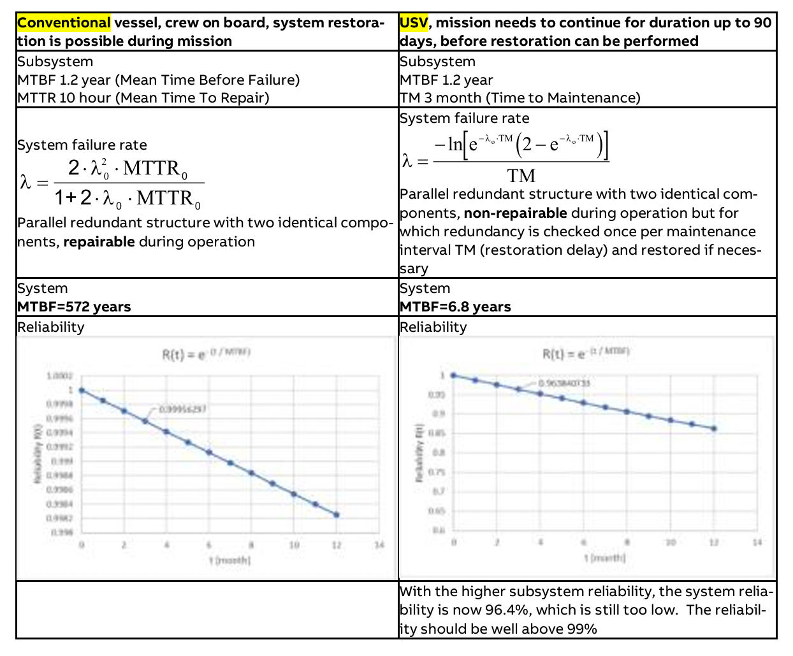 |
| Size Constraint | The bulky design of the current USV PDS components (e.g. Relay Modules, PLCs) reduces the onboard space available for other essential components such as sensors and servers. This makes onboard system design more constrained and maintenance tasks more cumbersome. |
| Existence of Single Point of Failure | Using ST Engineering’s USV Power architecture as an example, the loss of PLC signal will immediately de-energises all relays in its PDS, cutting power to the entire boat and hence presenting a significant operational risk to the USV. 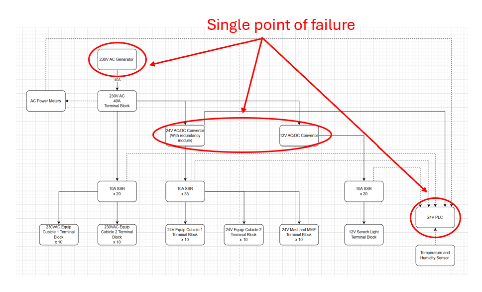 |
| Lack of Power Line Monitoring and Reporting | Due to the lack of real-time power monitoring and fault reporting capabilities, early signs of degradation or minor malfunctions can easily be neglected and gradually escalate, eventually developing into critical failures that threaten the safety and mission success of the USV. |
Table 1: Summary of Existing Problems in Current USV PDS Designs
4. Problem Statement
Summarising the aforementioned problems, the problem statement of this project is defined as:
Existing PDS in medium-sized Unmanned Surface Vehicles (USVs) are not optimized for autonomous operations. Current systems are bulky, rely on manual maintenance, and contain critical single points of failure, which collectively reduce system reliability and mission success rates. Furthermore, the lack of real-time power line monitoring and fault reporting prevents early detection of minor issues, allowing them to escalate into significant failures that threaten the safety and operational effectiveness of the USV.
Therefore, this project aims to:
Leverage PCB-based design technologies to reduce the size of the current ST Engineering USV Power Distribution System while improving mission success rates through enhancing fault tolerance and implementing advanced power monitoring and reporting capabilities.
5. Value Proposition
*For a detailed discussion on the value proposition of this project, please refer to the interim report.
By addressing the problem statements, the proposed PDS design will provide the stakeholders of the target USV several benefits:
| Features | Benefits |
|---|---|
| Compact Design | A smaller PDS footprint allows more efficient use of space within the USV’s equipment racks. This increases design flexibility and scalability across different USV sizes and configurations. |
| Enhanced Fault Tolerance | A more robust PDS reduces the impact of component failures, improving overall system reliability and increasing mission success rates. |
| Advanced Power Monitoring and Reporting | Real-time power-status insights support early detection of abnormal conditions. This enables proactive maintenance, prevents minor issues from escalating into critical faults, and reduces repair costs and downtime. |
Table 2: Key Benefits of the Proposed PDS
6. Design Requirements
6.1 Design Standards
To ensure the new PDS meets industry best practices and regulatory requirements, the following design standards were referenced in the design process of this project:
IEEE Recommended Practice for the Design and Application of Power Electronics in Electrical Power Systems (IEEE Std 1709-2010) [4].
This standard provides comprehensive guidelines for designing power electronic systems in maritime applications, covering aspects such as electrical safety, electromagnetic compatibility, thermal management, and environmental considerations.
6.2 Technical Specifications
As a starting point, the new PDS must at least match the technical performance of the existing system. Based on an evaluation of the current PDS capabilities as well as suggestions given by the ST USV engineering team, the below technical requirements were identified:
| Technical Capabilities | Specifications |
|---|---|
| Physical Dimension | < 445mm x 600mm x 133mm |
| Number of Channels | 26 |
| Application Voltage | 12V and 24V DC |
| Maximum Continuous Current per channel | 20A |
| Maximum Transient Current per channel | 30A |
| Fault Protection | Overvoltage/Undervoltage/Overcurrent |
| Power System Monitoring | Power Consumption, Power Good(PG), Fault Status |
| Communication Protocol | Digital/I2C/CAN 2.0 |
Table 3: Core Technical Requirements for the New PDS
6.3 Functional Sub-goals
In addition to meeting the technical specifications, the new PDS must achieve three key functionalities to satisfy user requirements.
| Key Functionalities | Section Number |
|---|---|
| Compact and robust power-switching solutions for each channel | Section 8.1 |
| Integrated power-line protection for transient and fault conditions | Section 8.2 |
| Real-time monitoring and reporting of power status and current consumption for each channel | Section 8.3 |
Table 4: New PDS System Functionalities and the Corresponding Report Sections
6.4 Environmental Conditions
Since this product is intended for use in maritime environments, the following environmental parameters were identified from the design standard mentioned above and will be referenced in the design and testing of the new PDS.
| Parameters | Conditions |
|---|---|
| Ambient Temperature | ≤ 50°C |
| Vibration frequency | ≥ 22 Hz |
| Humidity | Approximately 80% |
Table 5: Operational Conditions for the New PDS
6.5 Performance Criteria
The following performance criteria are defined to evaluate the new PDS against the technical specifications and functional sub-goals outlined above. These criteria will be directly assessed during the prototyping and testing phases of the project.
| Type | Performance Criterion | Target Value | Rational |
|---|---|---|---|
| Power Distribution Stability | Ability to maintain stable power supply under varying load conditions | Uninterrupted continuous power supply up to 20A, voltage ripple < 100mV | Ripple much smaller than the most voltage sensitive devices on PDS (operating range 10.0 - 13.5V at 12V input) |
| Power Switching Capability | Ability to response to power channel control signal (ON/OFF) from the vehicle’s control system | Correct switching behaviour; Response time < 1ms | Current configured response time of the power PLC to a power channel ON/OFF command |
| Power Monitoring Accuracy | Details in Section 8.3.3 | Details in Section 8.3.3 | |
| Power Protection Effectiveness | Ability to effectively protect the power lines from transient fault conditions; Ability to identify the type of fault (e.g., overcurrent, short circuit) | Correct fault type identification; Protection trigger time < 1ms | The trigger time of the physical fuses currently used in the system is around 1ms |
Table 6: Performance Criteria for Evaluating the New PDS and Their Rationals
7. System Overview
To fullfill the above mentioned technical specifications, the proposed new PDS consists of three main subsystems of PCBs: the Relay PCB system, the MCU PCB, and the Power Backplane PCB.

Figure 3: Summarised System Architecture of the developed PDS
The following sections provide a detailed description of each subsystem, beginning with the Relay PCB system, which forms the backbone of the proposed PDS.
8. Relay PCB System
The Relay PCB system consists of 26 individual relay PCBs, each controls and monitors a single DC power channel. The design of this system supports the three key functionalities outlined in Section 6.3
8.1. Power Switching
One important functionality of the Relay PCB is to provide compact and robust power switching control for all power channels. This is achieved through two main improvements: Moving from PLC and Relay Module to Relay PCB Backplane & Modifying the Existing Power Switching Logic.
8.1.1 Moving Towards PCBs
As mentioned in Section 2.2, the current PDS used in ST Engineering USVs relies on a combination of PLCs and multiple SSR modules for power switching. This approach is also common across many conventional USVs in the maritime industry. In this project, an alternative approach using an MCU and Relay PCB backplane system was explored to overcome the size constraint of this traditional designs.
The below table summarises the key advantages and disadvntages of the two approaches:
| Aspect | PLC + Relay Modules | MCU + Relay PCB |
|---|---|---|
| Size and Weight | - Bulky and heavy due to discrete components - Requires additional space for wiring and terminal blocks |
- Compact and lightweight with integrated circuit design - Reduces wiring complexity and space requirements |
| Reliability and Durability | - Certified for maritime usage - proper insulation and protection done based on industrial standards |
- Requires careful design effort to ensure robustness |
| Customisability and Scalability | - Limited customisation - Easily scalable by adding or modifying Relay/PLC modules |
- Highly customisable to specific requirements - More difficult to change/scale up |
Table 7: Comparison Between PLC + Relay and MCU + Relay PCB System
From this comparison, it is evident that the MCU + Relay PCB system offers significant advantages in size reduction, which aligns with one of the primary objectives of this project. However, it also introduces certain limitations that must be addressed to ensure robustness and scalability. As a result, two key design features were implemented:
| Limitations | Proposed Solutions |
|---|---|
| Customisability and Scalability | The system adopts a PCB backplane architecture, where the MCU and Relay PCBs are modular plug-in cards and the base backplane contains only connectors and power traces. This modular design allows easy replacement and upgrading of individual Relay PCBs, enabling users to customise and scale the PDS without a full redesign. 
|
| Reliability and Durability | To enhance system reliability, the PLC remains as the switching controller for the relay PCBs, while the MCU handles only power monitoring and data collection. This hybrid PLC-MCU approach ensures robust power control while maintaining compact PCB design. 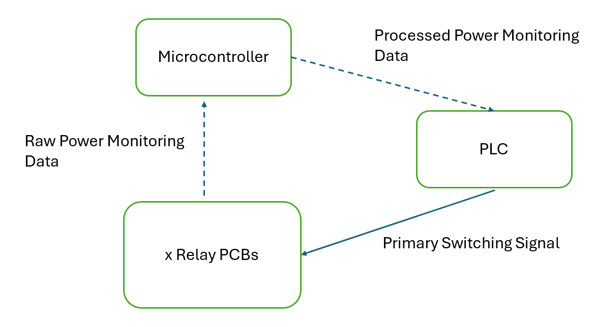 |
Table 8: Proposed Solutions Targeting Limitations of MCU + Relay PCB System
8.1.2 Improved Power Switching Logic
As discussed in Section 3, the current PDS control in ST Engineering USVs relies on a continuous signal from the PLC to maintain the ON state of each power channel. This design introduces a critical risk: any PLC failure or loose connection can result in complete power-line disconnection. To address this, a new control logic using an ON-signal latching mechanism was developed. The diagrams below illustrate the current control logic and the proposed new logic:
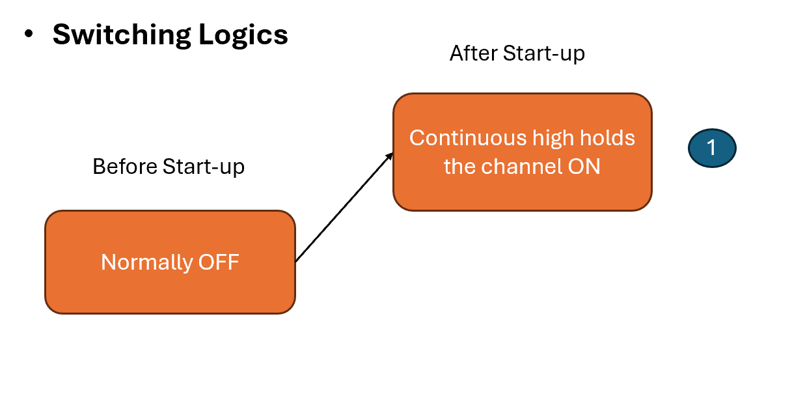
Figure 4: Current Control Logic in the PDS
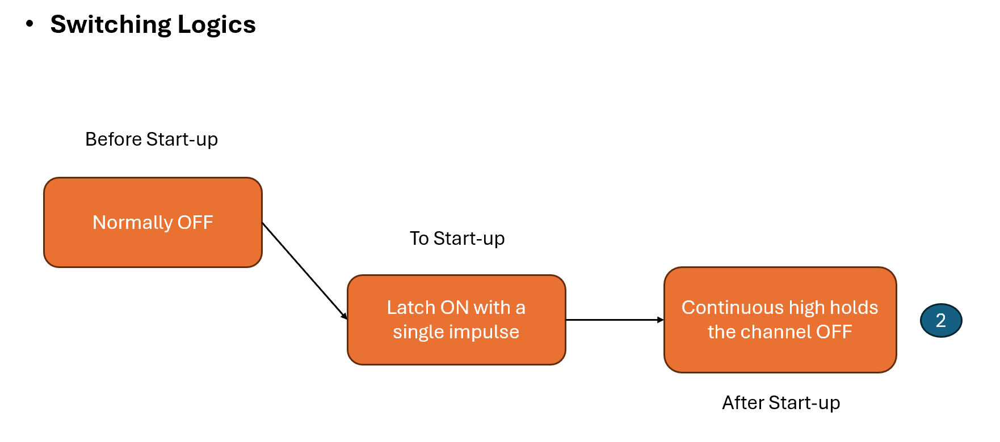
Figure 5: New Control Logic proposed
| Aspect | Current Logic | Proposed Latching Logic |
|---|---|---|
| ON State Maintenance | A power channel remains ON only while the PLC provides a continuous digital HIGH signal. Any interruption immediately turns the channel OFF. | A momentary HIGH signal from the MCU toggles and latches the power channel ON at startup. Subsequent continuous HIGH signals can be used to turn the channel OFF if needed. |
| Fault Tolerance | Loss of PLC signal immediately turns the channel OFF, making the system vulnerable to failures. | A loss of PLC signal does not turn an already ON channel OFF, greatly enhancing fault tolerance. Transient or permanent PLC/MCU failures will not disrupt power delivery to critical subsystems during missions. |
Table 9: Differences between Current and Proposed Switching Logics
Initially, the latching mechanism was planned as a separate, pluggable PCB, as noted in the interim report. However, after further review and consultation with the ST Engineering USV team, the design was revised to integrate the latching circuit directly into the Relay PCB, providing a more compact and cost-effective solution. The schematic and layout of the integrated latching circuit are shown below.

Figure 6: Latching Circuit Schematic
*An LTspice simulation has also been conducted with the designed circuit to validate its functionality. The simulation results are included in the appendix section of this report.
8.2 Power Protection
In addition to power switching, power protection is another critical feature that ensures the reliability of each power channel. The current PDS used in ST Engineering USVs lacks sufficient protection mechanisms, leaving it vulnerable to transient events and fault conditions. The Relay PCB design presented below addresses these shortcomings,
8.2.1 Protection Requirements
Before detailing the protection mechanisms, it is important to identify the types of faults that the new PDS should be able to protect against. Refered to the design standards outlined in Section 6.1, the new PDS should be able to protect against:
- Overvoltage (OV)
- Undervoltage (UV)
- Overcurrent (OC)
8.2.2 Choice of MOSFET Gate Driver IC - TPS4800
A MOSFET gate driver is an electronic device that efficiently controls the gate terminal of a MOSFET, enabling rapid switching between ON and OFF states. It is a critical component for implementing the power channel switching functionality in the Relay PCB.
For this project, the TPS4800 from Texas Instruments (TI) was selected. It meets all the required fault protection criteria while supporting the power switching needs of the system. Key features of the TPS4800 are summarized below:
| Key Features | Specifications | Selection Rational |
|---|---|---|
| Operating Voltage | 3.5V to 95V DC | Covers the expected operation voltage of the PDS (12V/24V). |
| Overvoltage Protection Threshold | Adjustable between 10V to 60V DC | Provides sufficient range to handle potential voltage spikes (the highest voltage spike measured in current PDS is 28V) and can be adjusted for different subsystem tolerances. |
| Undervoltage Protection Threshold | Adjustable between 6V to 54V DC | Provides sufficient range to handle potential voltage dips (the lowest voltage dip measured in current PDS is 10V) and can be adjusted for different subsystem tolerances. |
| Overcurrent Protection Threshold | Adjustable between 5A to 50A | Covers the range of acceptable inrush/short-circuit fault currents (0-30A) for this PDS design, with flexibility to match the ratings of various connected loads. |
| Overcurrent Protection Response Time | <1ms (adjustable) | Meeting the technical requirements outlined in Section 6.2. |
Table 10: Key Features of TPS4800 MOSFET Gate Driver IC
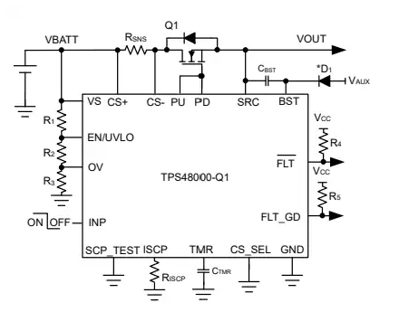
Figure 7: TPS4800 MOSFET Gate Driver IC Operation Circuit
8.2.3 User Configurable Protection Thresholds
To enhance the modularity and flexibility of the Relay PCB, the OC protection thresholds are user-configurable via a DIP switch interface on the PCB. This allows the design to accommodate different subsystem protection requirements without hardware modifications. The available options are 5A, 10A, 20A, and 30A, which are selected becasue they are the 4 most common current ratings of the connected devices in PDS.
During operation, the MCU reads the DIP switch settings for each channel to determine the OC threshold. This information is then used to identify OC events, which will be explained further in Section 8.3.4.
*The design considerations for other protection features associated with this MOSFET gate driver are highlighted in the appendix section.
8.3 Power Monitoring
The power monitoring section of the Relay PCB is responsible for monitoring and reporting power condition of each channel. Three type of messages are transmitted to the MCU:
8.3.1 Power Good (PG) Status
As the simplest and most direct power health indicator, a TPS3711DDCR voltage supervisor from TI is implemented on the Relay PCB to monitor the Power Good (PG) status. The IC continuously monitors the output voltage and asserts the PG signal HIGH when the voltage remains within a predefined range. In this project, the range is set to 10–30 V to cover both operating voltages of the PDS.
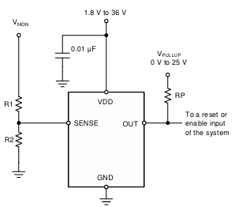
Figure 8: TPS3711DDCR Voltage Supervisor IC Operation Circuit
While PG monitoring provides immediate detection of power loss, it does not provide information about the root cause of the issue (for example, whether the loss is due to input power failure or protection mechanisms being triggered). This limitation motivates the introduction of additional monitoring methods.
8.3.2 Fault Reporting
Targeting this limitation, the fault signal from MOSFET gate driver IC TPS4800 selected in Section 8.2.1 is utilised. Whenever any of the built-in protection mechanisms are triggered, the fault pin is asserted LOW to indicate that a protection event has occurred
However, this fault output is only a binary digital signal and does not identify the specific type or severity of the fault. This is why power consumption monitoring is also introduced in this Relay PCB design.
8.3.3 Power Consumption Monitoring
In order to perform power consumption monitoring, the INA228 current shunt monitor from TI is selected. The table below summarises the measurement requirements of the new PDS power monitoring system and explains how the selection of the INA228 satisfies these requirements.
| Parameter | Requirement | Rationale | INA228 Features |
|---|---|---|---|
| Current/Voltage Measurement Accuracy | ±10% of the actual value (or 0.01A if current drawn less than 0.1A) | Enough accuracy to identify overcurrent/undervoltage/overvoltage fault in the current PDS | Low gain error and high common mode rejection ratio |
| Voltage Measurement Resolution | 100mV or better | Resolution much smaller than the PDS operating voltages needed to be measured (12V and 24V) | High-resolution voltage sensing using 20 bit ADC |
| Voltage Measurement Range | 0V to 30V | Covers the two operating voltages of the designed PDS (12V and 24V) | Wide input voltage sensing range (0-85V) |
| Current Measurement Resolution | 0.01A or better | Designed based on the lightest load in current ST Engineering USV’s PDS (0.06A) | High-resolution current sensing using 20 bit ADC |
| Current Measurement Range | 0A to 30A | Covers the highest allowable transient current level in the designed PDS | Wide current sensing range (with the selection of 4mohm shunt, range from 0-40A) |
Table 11: Power Consumption Monitoring Requirements
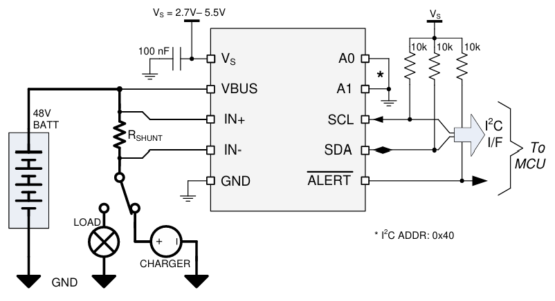
Figure 9: INA228 Current Shunt Monitor IC Operation Circuit
In addition to satisfying the measurement requirements, the INA228 also provides an I2C communication interface which enableing the reporting of the monitroing data to the PDS MCU. By adapting this communcation protocol, the PCB routing complexity can be greatly reduced as multiple INA228 devices from different power channel can share the same two-wire I²C bus
8.3.4 Fault Analysis Logic
Using all the above mentioned power monitoring signals, a fault analysis logic, illustrated in the figure below, is implemented in the firmware of the new PDS. With this logic, the system can distinguish between the types of faults occurred and report this information to the USV’s power PLC for further investigations
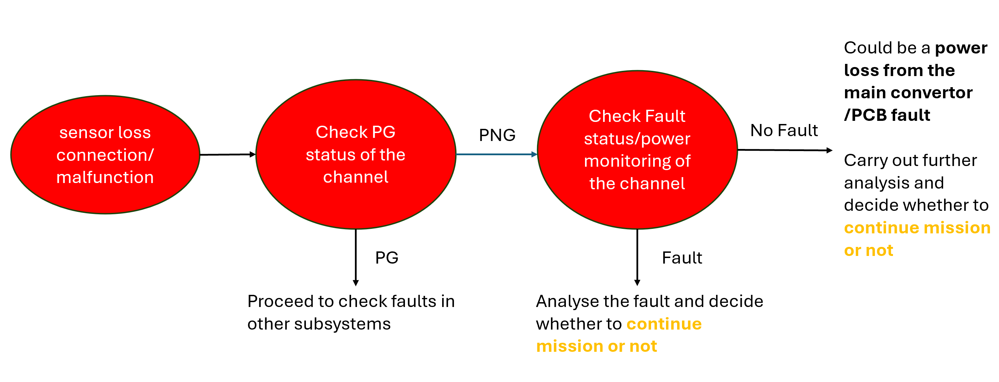
Figure 10: Fault Analysis Logic Flow
9. MCU PCB System
The MCU PCB serves as the central processing unit in the new PDS, responsible for collecting power monitoring data and facilitating communication with the USV’s power PLC.
9.1 Choice of MCU - STM32G474QET6
The MCU selected for this PCB is from the STMicroelectronics STM32G4 series, in particular the STM32G474QET6, which offers a powerful ARM Cortex-M4 core, ample memory resources, and most importantly, a wide range of peripherals sufficient for the new PDS requirements.
| Requirements | STM32G474QET6 Features |
|---|---|
| Collect 52 digital signals (PG + Fault) from 26 Relay PCB channels | Up to 107 fast GPIOs |
| Collect 26 analog signals (OC thresholds) from 26 Relay PCB channels | 5 ADC channels available with total 42 inputs |
| Communicate with 26 channels of INA228 via I²C | 5 I²C buses, able to support up to 80 I2C devices (estimation using bus capacitance) |
| Support system CAN communication | Built-in CAN controller, eliminating the need for an external CAN controller and reducing PCB footprint |
Table 12: MCU System Requirements and the Corresponding Features on STM32G474QET6
9.2 Data Reporting Peripheral Design
As discussed previously, the STM32G474QET6 features an integrated Controller Area Network (CAN) controller. CAN is selected as the primary communication protocol between the MCU and the USV’s power PLC due to its robustness, high reliability, and strong noise immunity, which make it particularly suitable for maritime environments. In addition, CAN significantly reduces wiring complexity, as the entire network requires only a two-wire bus for communication.
Below is an overall data flow diagram showing how the power monitoring data is collected and reported in the new PDS.
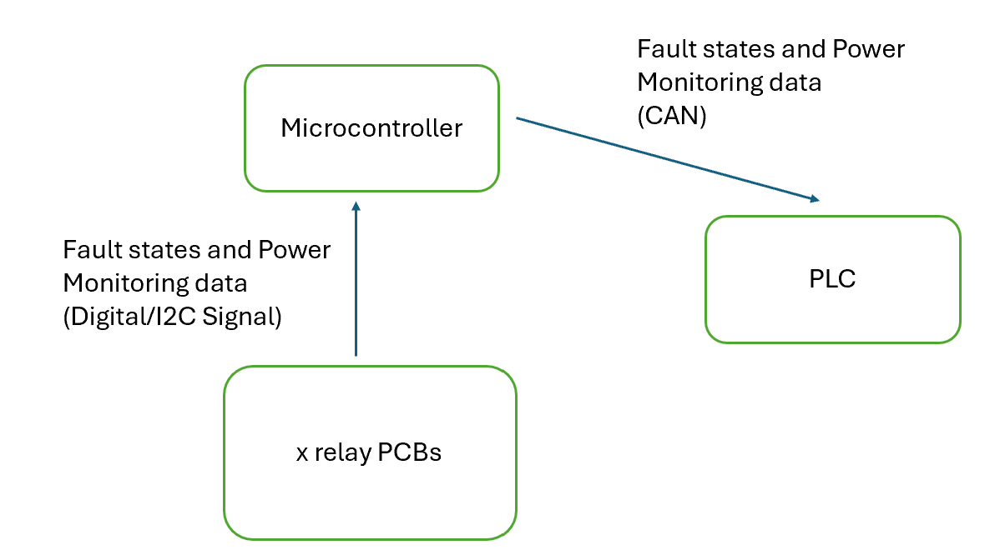
Figure 11: Power Data Flow in the new PDS
10. Power Backplane
As discussed in Section 8.1.1, the power backplane forms the structural and electrical foundation of the proposed PDS. It provides a robust and scalable platform for integrating the Relay PCBs, the MCU PCB, and other PDS components such as fuses and terminal blocks.
Besides the copper planes and power traces used for power distribution, the backplane primarily hosts two key connector types:
- High-current board-to-board connectors for the Relay PCB–to–Backplane interface
- Signal connectors that route switching signals from the PLC to the Relay PCBs
*The deatiled design considerations for the PCBs —such as current-carrying capability, thermal management, and mechanical robustness—are provided in the appendix of this report.
11. Firmware Development
Other than the hardware design mentioned above, the firmware development for the Relay PCB and the MCU PCB is also a critical part of this project.
| PCB Section | Firmware Features |
|---|---|
| Relay PCB | - Configure INA228 conversion time for fast response to transient faults - Set sensor sampling rate for accurate continuous power monitoring - Assign unique I2C static addresses for each channel to enable multi-channel identification |
| MCU PCB | - Read Power Good (PG), fault status, and power consumption data from all Relay PCBs - Process collected data to determine fault type and channel condition - Transmit processed monitoring and fault data to the USV power PLC via CAN bus |
Table 13: Firmware Features on each subsystems
*The detailed design considerations of the above mentioned firmware tasks will be illustrated in the appendix section of this report.
12. Subsystem Prototyping and Testing
Before integrating the MOSFET PCB, MCU PCB, and Power backplane into a complete PDS, each subsystem were prototyped and tested separately to validate their functionality and performance.
12.1 Relay PCB Subsystem Prototyping and Testing
In this project, the Relay PCB has gone through a total of 3 major iterations with the following primary objectives:
| Relay PCB Iteration | Primary Objectives |
|---|---|
| Iteration 1 | - Validate the functionality of the chosen MOSFET Gate Driver IC and the latching circuit for reliable power switching and fault protection. - Test power monitoring features using the selected ICs in Section 8.3. - Conduct preliminary thermal testing to identify potential heat issues and plan mitigation solutions such as heatsinks. |
| Iteration 2 | - Replace temporary cable to terminal block connections with the intended PCB board-to-board connectors and verify its mechanical and electrical reliability. - Evaluate the performance of newly added ICs and design improvements from the previous iteration. - Integrate this iteration with a single-channel test board to validate communication and data acquisition with the MCU. |
| Iteration 3 | - Finalize the Relay PCB design with all optimizations incorporated. - Integrate with the full-scale Power Backplane and MCU PCB for system-level validation in a real USV environment. - Perform final testing to ensure reliability, thermal stability, and proper interaction with other subsystems. |
Table 14: Primary Objectives of each Relay PCB Iteration
Here are the test results and problems encountered in each iteration:
12.1.1 1st Iteration Relay PCB
The 1st iteration of the Relay PCB is designed with Wago 221-412 terminal blocks as power input and output connectors, which allow it to be tested seperately through cable connections.
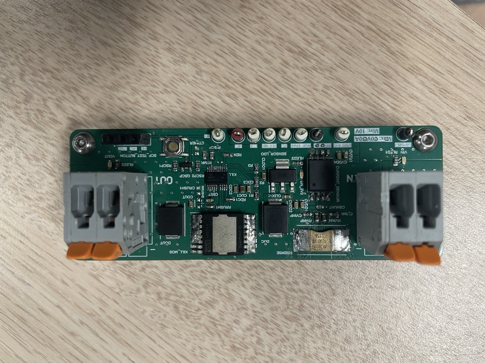
Figure 12: 1st Iteration of the Relay PCB
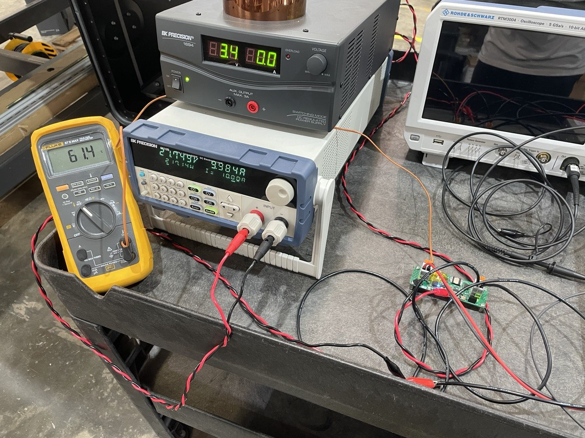
Figure 13: Test Setup for 1st Iteration of the Relay PCB
*The design of this iteration of the PCB is also discussed in the Interim Report, refer to it if more information is needed.
| Iteration | Tests Conducted | Test Results | Conclusions / Actions |
|---|---|---|---|
| 1st Iteration | - Power channel switching using Arduino signals - Power protection testing - Power monitoring using Arduino as receiver - Preliminary thermal testing: 20A continuous current until steady-state temperature |
- MOSFET Gate Driver IC TPS4800 and latching circuit verified to function correctly - AMC1301DWVR power monitoring IC failed due to allowable common-mode input voltage being lower than the operating voltage - Hot spots identified: MOSFET and shunt resistor; steady-state temperature ~100°C |
- Relay PCB design validated for switching and latching functions - Power monitoring IC changed from AMC1301DWVR to INA228 for subsequent iterations - Steady-state temperature is within component limits but higher than desired; Attempt to improve this problem by reducing shunt resistor resistance and a heatsink design as shown below 
|
Table 15: Relay PCB Iteration 1 Testing Result Summary
Besides tha bove mentioned test, an evaluation on this iteration of the design was also conducted with the USV Engineers from ST Engineering, who will be implementing the final version of this solution on their vessel:
| Engineer Feedback / Observation | Design Improvements Implemented |
|---|---|
| The overcurrent (OC) protection threshold on this iteration of the PCB is fixed, limiting its adaptability to other subsystems with different OC requirements. | Added a user-configurable OC threshold using a combination of DIP switches and MOSFET-based resistor selection circuits  |
| A standalone latching PCB is unnecessary, as there is no use case for reverting to the old switching logic. Additionally, the separate PCB increases mechanical assembly complexity. | Integrated the latching circuit directly into the Relay PCB (as mentioned in Section 8.1.2) |
Table 16: Relay PCB Iteration 1 USV Engineer Feedback Summary
12.1.3 2nd Iteration Relay PCB and Test & Commissioning (T&C) PCB
In addition to implementing the improvements made to address the issues identified in the 1st iteration, the 2nd iteration of the Relay PCB has replaced the terminal blocks with the high-current PCB board-to-board MULTI-BEAM Connector 6450120-2, allowing the evaluation of the connector’s capability
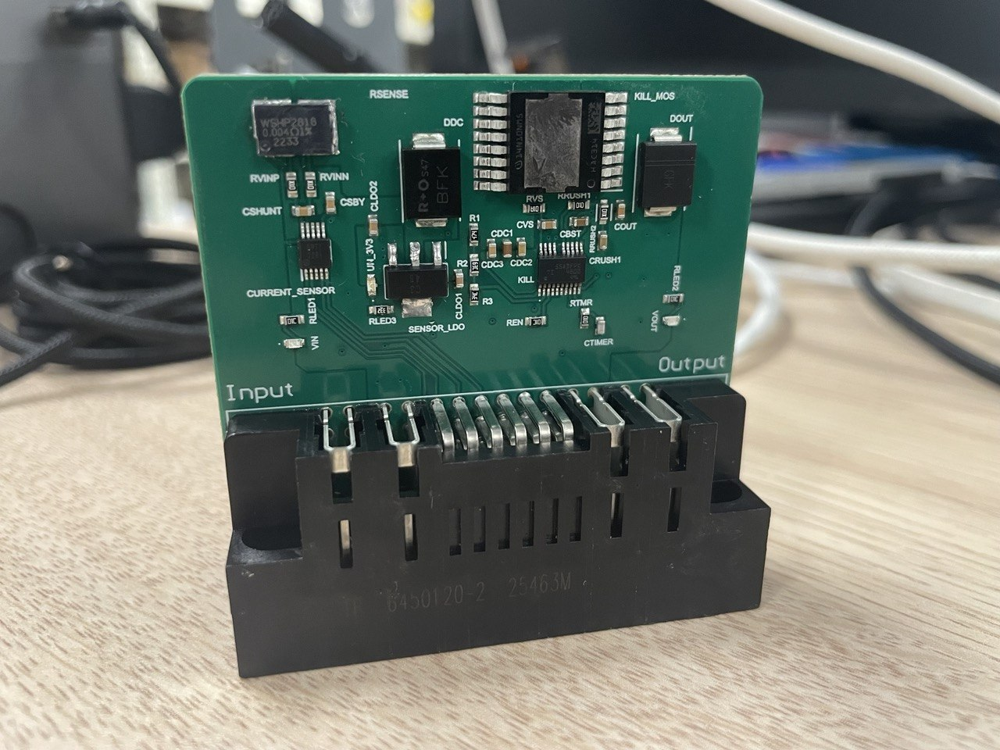
Figure 14: Front view of the 2nd Iteration Relay PCB
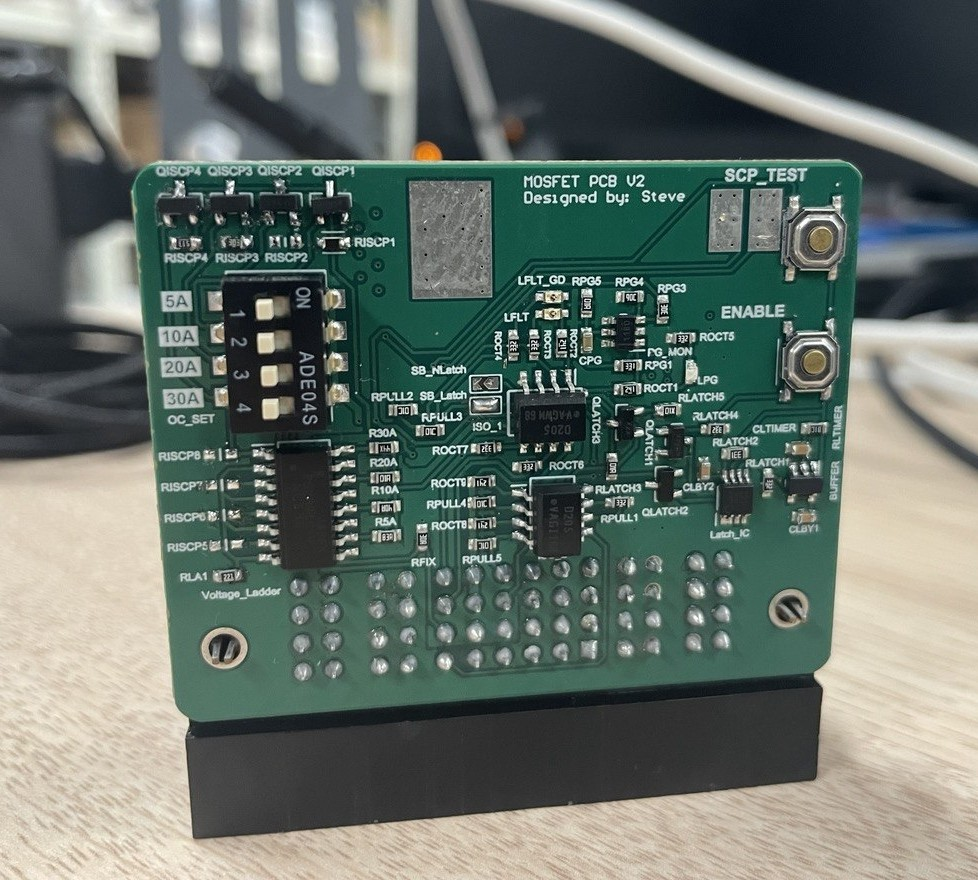
Figure 15: Back view of the 2nd Iteration Relay PCB
However, integrating the board-to-board connector into the design also meant that this iteration of the Relay PCB could no longer be tested in isolation. To address this, a single-channel Test & Commissioning (T&C) PCB was developed. This PCB combines a section of board-to-board connectors for the Relay PCB and a section of the selected MCU peripherals. It serves as a proof-of-concept for the full PCB subsystems, enabling iterative testing and improvements before scaling to the full 26-channel implementation.
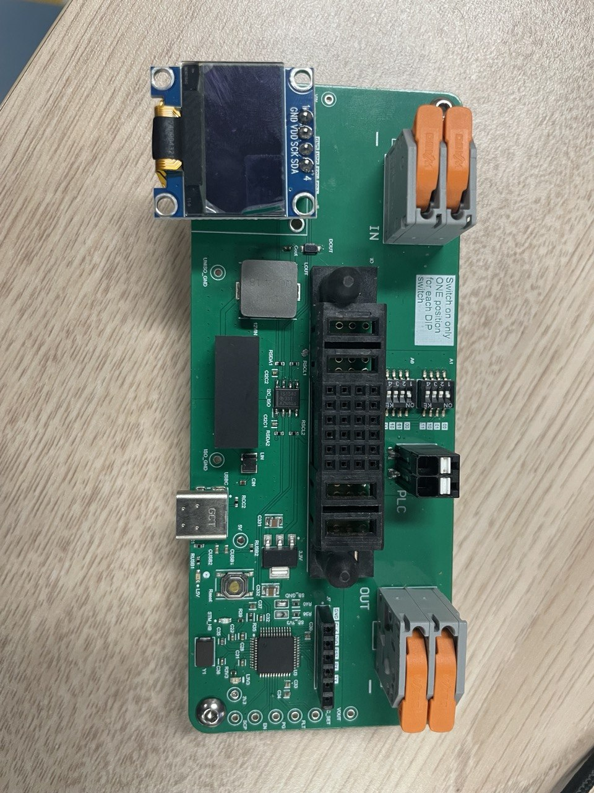
Figure 16: Test & Commissioning PCB
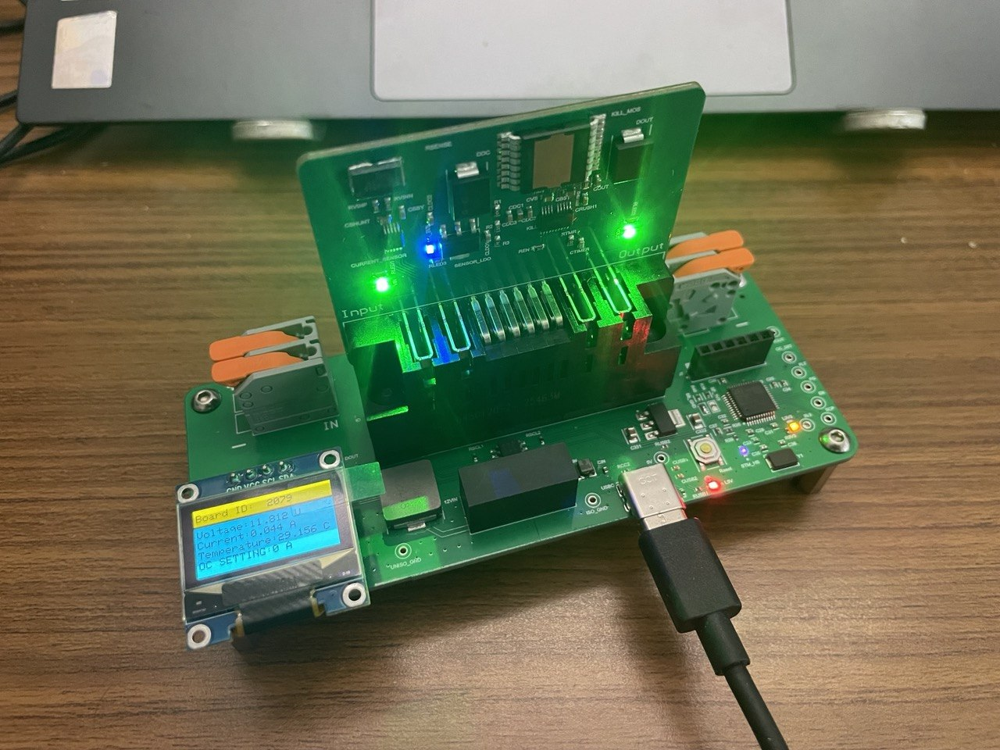
Figure 17: 2nd Iteration Relay PCB Integrated with T&C PCB
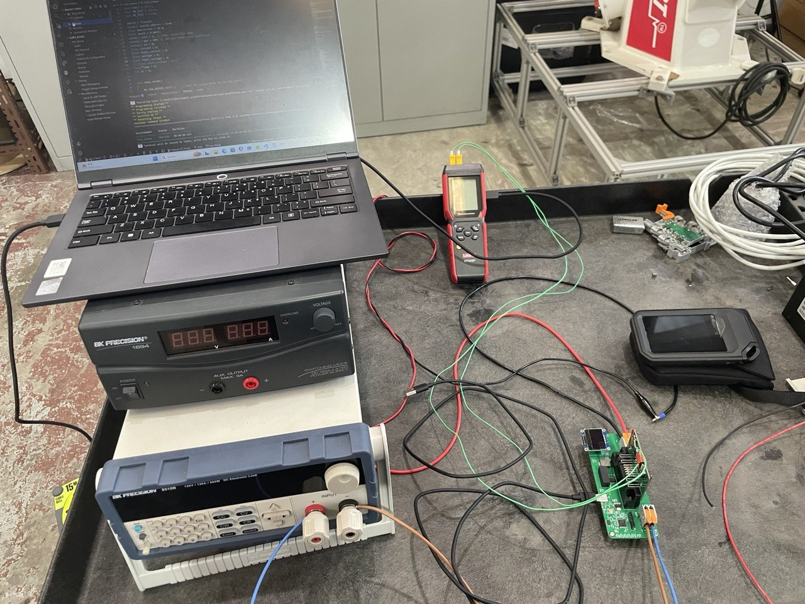
Figure 18: Test Setup for the Integrated PCBs
Besides, the T&C PCB is configured to perform a functionality and configuration check on any Relay PCB connected at start-up. This serves as a preventive measure to detect potential production errors before the Relay PCBs are assembled into the actual PDS. The figure below illustrates this commissioning test procedures and their intended outcomes.
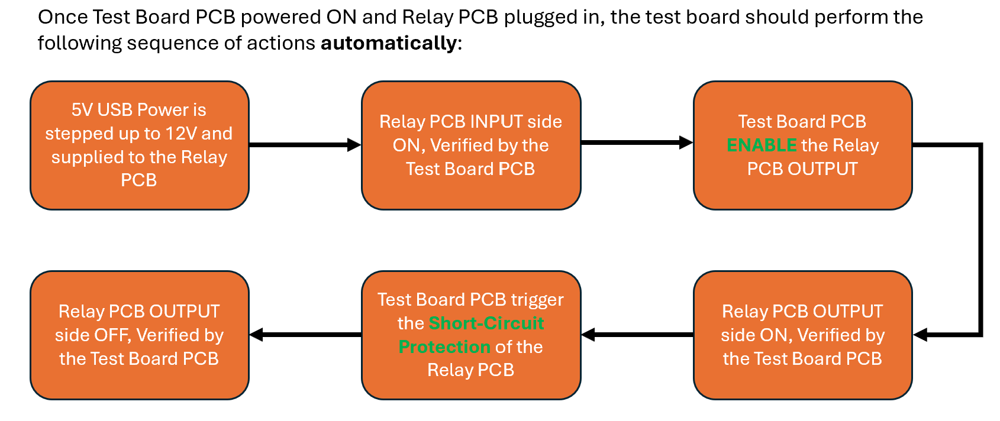
Figure 19: Relay PCB Commissioning Test Procedures and Intended Outcomes
Figure 20: Video Demonstration of the Relay PCB Commissioning Test Procedures
*More detailed information about the design of the T&C PCB and the commissioning test procedures can be found in the appendix section of this report.
| Iteration | Tests Conducted | Test Results | Conclusions / Actions |
|---|---|---|---|
| 2nd Iteration with T&C PCB | - Load testing of the board-to-board power connector - Power switching tests using signals from T&C PCB and PLC - Validation of INA228 power monitoring IC - Validation of the circuit for user-configurable OC threshold |
- TE Connectivity MULTI-BEAM Connector 6450120-2 successfully handled 20 A continuous and 30 A transient currents - Switching via 3.3V T&C PCB signals operated correctly; however, 24V PLC control signals caused damage to the input signal line - INA228 validated to provide accurate power monitoring - MOSFET-based resistor selection introduced inaccuracies in OC threshold setting 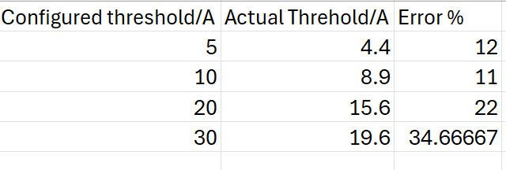 |
- Add 24 V → 3.3 V level-shifting stage for PLC compatibility in the next revision - Replace MOSFET resistor-selection circuit with a DP3T mechanical slide switch for improved OC threshold accuracy and reliability 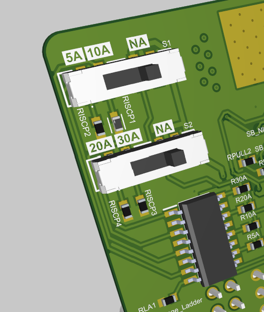 |
Table 17: Relay PCB Iteration 2 and T&C PCB Testing Result Summary 1
| Iteration | Tests Conducted | Test Results | Conclusions / Actions |
|---|---|---|---|
| 2nd Iteration with T&C PCB | - Validation of single-channel monitoring and reporting via T&C PCB LCD screen - Thermal testing to evaluate effectiveness of the thermal mitigation design adapted |
- Relay and MCU firmware successfully demonstrated single-channel power monitoring and reporting on the T&C PCB LCD - Thermal testing showed that the steady-state temperature at identified hot spots remained higher than the desired operating range ~ 90°C 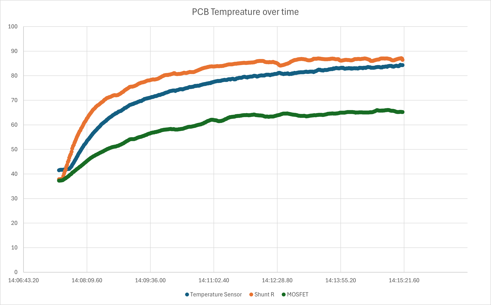 |
- T&C PCB confirmed as a suitable platform for continued firmware development and full-system scaling - Increase Relay PCB copper weight to improve heat spreading and on-board dissipation; Engage the mechanical engineering team to explore additional system-level cooling solutions |
Table 18: Relay PCB Iteration 2 and T&C PCB Testing Result Summary 2
12.1.4 Final Iteration Relay PCB
This iteration of the PCB mainly focus on improving issues identified in the previous iteration. After the fabrication and assembly of this iteration, a throughout testing and evaluation with the Power Backplane and MCU Board is conducted, which will be discussed in the “Overall System Integration and Testing” section of this report (Section 13).

Figure 21: Final Iteration of the Relay PCB
*Because of PCB manufacturing delay, the production of this iteration of the Relay PCB is still ongoing at the time of this report submission. Most latest picture will be updated once the production is complete.
12.2 MCU & Backplane PCB Prototyping and Testing
Other than the Relay PCBs, two more PCB subsystems are prototyped in this project: the MCU PCB and the Power Backplane PCB.
The MCU PCB is prototyped with reference to the MCU section of the T&C PCB, with the addition of header pins to be connected with the power backplane
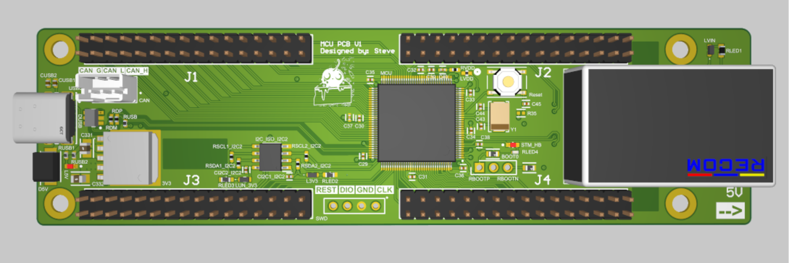
Figure 22: MCU PCB Prototype
Similar to the MCU PCB, the power backplane is prototyped by expanding the single channel Relay PCB connector section of the T&C PCB to a full 26 channels backplane design.
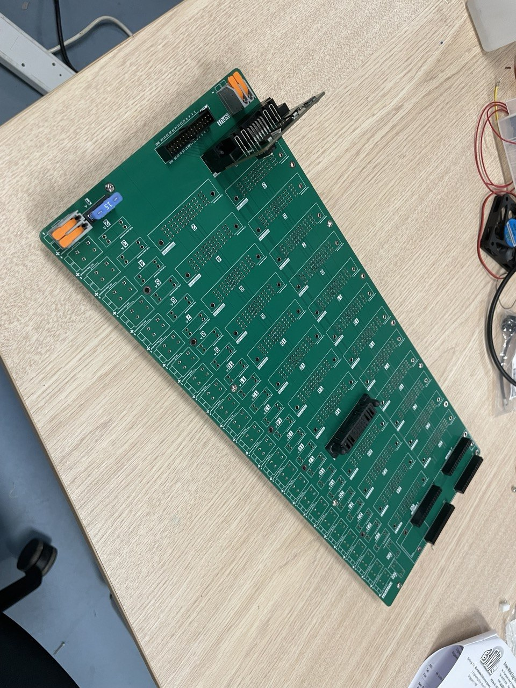
Figure 23: Power Backplane Prototype
Due to the nature of these PCBs, it is not feasible to test them separately without the integration of the whole system. As a result, the testing of these two PCB subsystems is conducted together with the final iteration of the Relay PCB, which, as mentioned above, will be discussed in the next section.
13. Overall System Integration and Testing
After separate testing of the individual subsystems, the next step is to integrate them on the power backplane and conduct comprehensive testing to validate the overall functionality and performance of the new PDS against the performance criteria defined in Section 6.5.
However, due to time constraint, this project will only cover the initial integration testing phases, which include an in lab functionality testing and a thermal testing with 5 operating Relay PCB channels and the MCU PCB on the Power Backplane. Further testing phases will be carried out by the ST Engineering USV team after the completion of this project.
13.1 Functionality Testing
Functionality testing of the final PDS involve testing the power switching capabilities, fault protection features, and power monitoring functionalities under various load conditions and fault scenarios. The test was performed in a controlled laboratory environment using power supply and electronic load tester. Below is a summary of the functionality testing procedures and their results:
| Tested Functionality | Test Procedures | Expected Outcome | Actual Outcome | Pass/Fail |
|---|---|---|---|---|
| Power Channel Switching at no load | With no current drawn by electronic load tester, turn on each power channel for 30s then turn off the power channel | Power ON/OFF on all power channels with a response time <1ms | Power ON/OFF on all power channels successfully with a response time of 750us measured on the oscilloscope | PASS |
| Power Channel Switching at 20A continuous current drawn | With a constant current of 20A drawn by the electronic load tester, turn on each power channel for 30s then turn off the power channel | Same as above | Power ON/OFF on all power channels successfully with a response time of 750us measured on the oscilloscope | PASS |
| Power Channel Protection at 32A transient current drawn | With a transient current of 32A drawn by the electronic load tester at one specific channel, observe the response of all power channels (OC threshold configured to 30A) | Only the affected Power channel trips and protects within an acceptable delay (<1ms) | Only the affected power channel trips and protects with a delay of approximately 500us measured on the oscilloscope | PASS |
| Power Channel Protection at 9V undervoltage input | Apply a 9V input voltage to all power channel and observe the response | All power channel trips and protects against undervoltage within an acceptable delay (<1ms) | All power channel trips and protects against undervoltage with a delay of approximately 500us measured on the oscilloscope | PASS |
| Power Channel Protection at 32V overvoltage input | Apply a 32V input voltage to all power channel and observe the response | All power channel trips and protects against overvoltage within an acceptable delay (<1ms) | All power channel trips and protects against overvoltage with a delay of approximately 500us measured on the oscilloscope | PASS |
| Power Channel Monitoring at 24V 0.06A continuous current drawn (smallest load in ST Engineering USV) | With a constant current of 0.06A drawn by the electronic load tester, observe the power channel monitoring message on the MCU PCB | Power channel monitoring functions as specified in Section 8.3.3 | Voltage & Current reading accuracy within 0.01A of the expected value (0.05 - 0.07A) | PASS |
| Power Channel Monitoring at 24V 20A continuous current drawn | With a constant current of 20A drawn by the electronic load tester, monitor the power channel monitoring message on the MCU PCB | Same as above | Voltage & Current reading accuracy within 10% of the expected value (19.8 - 20.2A) | PASS |
Table 19: Functionality Test Results Summary for 5 Operating Channels

Figure 24: Test Setup for functionality testing of 5 Operating Channels
Other than the above mentioned tests, more tests were also conducted to validate features such as the detection of the fault types and the identification of the overcurrent threshold setting at each power channel. These will be summaries in the appendix section of this report.
*Becuase of PCB manufacturing delay, the above mentioned test results comes from the testing of only 1 operating relay PCB on the T&C PCB. The final results of the testing with 5 operating relay PCB on the Power Backplane will be updated after the submission of this report but before the completion of this project.
13.2 Thermal Testing
Thermal testing was conducted to evaluate the heat generation of the new Power Distribution System (PDS) under different load conditions. The objective of this test was to ensure that the system operates within safe temperature limits during continuous operation.
The overall system thermal test was performed by monitoring the temperature of five loaded channels under two conditions and last until a steady state temperature is reached:
- No-load condition
- Maximum continuous load of 20 A
The test procedure consisted of two stages:
Hot-spot identification – A thermal imaging camera was used to scan the system and identify components with the highest temperature rise.
Temperature monitoring – Temperature probes were then placed at the identified hot spots to continuously record temperature throughout the test duration.
The following table summarises the thermal testing results.
| Load Condition | Component | Hotest Spot Steady State Temperature | Within Accepted Range? | |
|---|---|---|---|---|
| 0A | MOSFETs | |||
| 0A | Shunt Resistor | |||
| 20A | MOSFETs | |||
| 20A | Shunt Resistor |
Table 20: Thermal Testing Results Summary for 5 Loaded Channels

Figure 25: Test Setup for thermal testing of 5 Loaded Channels
*Because of PCB manufacturing delay, the above mentioned thermal testing were unable to be conducted until the point of report submission. The final results will be updated here before the completion of this project.
14. Conclusion
The test and validation activities carried out above demonstrated that the developed PDS in this project satisfies the majority of the technical requirements outlined in Section 6.2. The system has been successfully validated at the subsystem and integrated levels, including power switching, protection, monitoring, thermal performance and firmware integration.
While the results confirm the feasibility and effectiveness of the proposed architecture, several limitations remain and present opportunities for further development and refinement.
14.1 Limitations
The primary limitation of this project is the absence of testing under real operational maritime conditions. Although extensive functional and thermal tests were conducted in a controlled laboratory environment, these conditions cannot fully replicate the challenges encountered in actual deployment, such as:
- Exposure to saltwater and humidity
- Wide ambient temperature variations
- Continuous mechanical vibration and shock
Consequently, the long-term reliability and performance of the PDS in real maritime environments remain to be verified. Follow-up sea trials and environmental testing are therefore required after project completion.
A second limitation arises from the current technical scope of the design. The present PDS implementation supports DC power distribution only and is not suitable for AC loads. This restricts the system’s applicability, as many maritime subsystems—such as servers, network switches, and induction motors—operate on AC power. Addressing this limitation will be essential for broader deployment in future iterations.
14.2 Possible Future Improvements
Building on the identified limitations, several potential improvements are proposed for future development.
Expansion to AC power support: A major enhancement would be extending the PDS to support AC loads. This would require:
- Redesign of the power switching architecture to handle AC currents
- Implementation of protection mechanisms suitable for AC fault conditions
- Enhancement of the monitoring system to accurately measure AC voltage, current, and power
This development would significantly increase the versatility of the PDS and enable it to support a wider range of maritime equipment.
Advanced data analytics and predictive maintenance: Beyond hardware improvements, the software capabilities of the PDS can be further expanded. The operational data collected by the MCU provides a strong foundation for advanced analytics, including:
- Machine-learning-based fault prediction
- Early detection of abnormal power consumption trends
- Support for predictive and condition-based maintenance
Such capabilities could reduce system downtime, improve reliability, and enhance overall operational efficiency.
References
- Abraham Sachin, “Marine Electrical Distribution,” 22 June 2018. [Online] Avaliable: teckhmarine.blogspot.com/2018/06/marine-electrical-distribution.html.
- ABB, “Unmanned Surface Vehicles/Vessel (USV) Reliable Power and Propulsion Architecture Characterization,” 2020. [Online]. Available: https://new.abb.com/docs/librariesprovider15/gov/usv-abb-white-paper-20200830.pdf?sfvrsn=6369e809_2
- ST Engineering, “Unmanned Surface Vehicle (USV) Solutions,” [Online]. Available: https://www.stengg.com/en/solutions/unmanned-surface-vehicle-usv-solutions.html
- IEEE Std 1709-2010, “IEEE Recommended Practice for the Design and Application of Power Electronics in Electrical Power Systems,” pp.1-50, 2010.
- Omron, “G3NA-210B-UTU DC5-24 Solid State Relay Datasheet,” [Online]. Available: https://www.ia.omron.com/product/item/7692/
- Texas Instruments, “TPS4800-Q1 High-Side and Low-Side N-Channel MOSFET Driver with Integrated Protection Features,” [Online]. Available: https://www.ti.com/product/TPS4800-Q1
- Texas Instruments, “TPS3711 Voltage Supervisor with Power-Good Output,” [Online]. Available: https://www.ti.com/product/TPS3711
- Texas Instruments, “AMC1301 Isolated Delta-Sigma Modulator for Current Sensing,” [Online]. Available: https://www.ti.com/product/AMC1301
- IPC-2152, “Standard for Determining Current-Carrying Capacity in Printed Board Design,” pp.1-60, 2017.
Appendix A: LTspice Simulation of the Latching Circuit

Figure A1: LTspice Simulation of the Latching Circuit
Appendix B: TPS4800 Power Protection Feature Design Considerations
In order to achieve the required fast switching response and reliable fault protection, the fault protection thresholds and timers around the MOSFET gate driver IC TPS4800 chosen must be carefully designed. Below are the key design considerations taken for the implementation of the MOSFET gate driver IC in this project:
| Design Aspect | Considerations |
|---|---|
| Gate Fault timer | The TPS4800 features an adjustable fault response timer that can be configured to optimize the switching speed and minimize the risk of false triggering. The timer is set to 330us which is a value that allows for an acceptable response time to transient faults (< 1ms) while avoiding unnecessary trips during device startup transients. |
| UV/OV Thresholds | Other than the OC threshold which is made configurable to the user, the UV and OV threhold are set to 10V and 30V respectively, which are the minimum and maximum allowable operating voltage of the devices connected with the current USV PDS. |
Appendix C: Design Considerations for the PCBs
Several design considerations were taken during the PCB design to ensure that the technical specifications and protection requirements mentioned in Section 5.2 and Section 7.1 are met:
Current and heat Tolerance: To handle the maximum continuous current of 20 A and transient current of 30 A, the Relay PCB adopts a 4-layer design, with the middle layers dedicated entirely to power and ground. Additionally, the PCB traces are designed with sufficient width and thickness to minimize resistance and heat generation (Calculation done based on design standrad IPC-2152). Thermal vias and copper pours are also incorporated to improve heat dissipation.
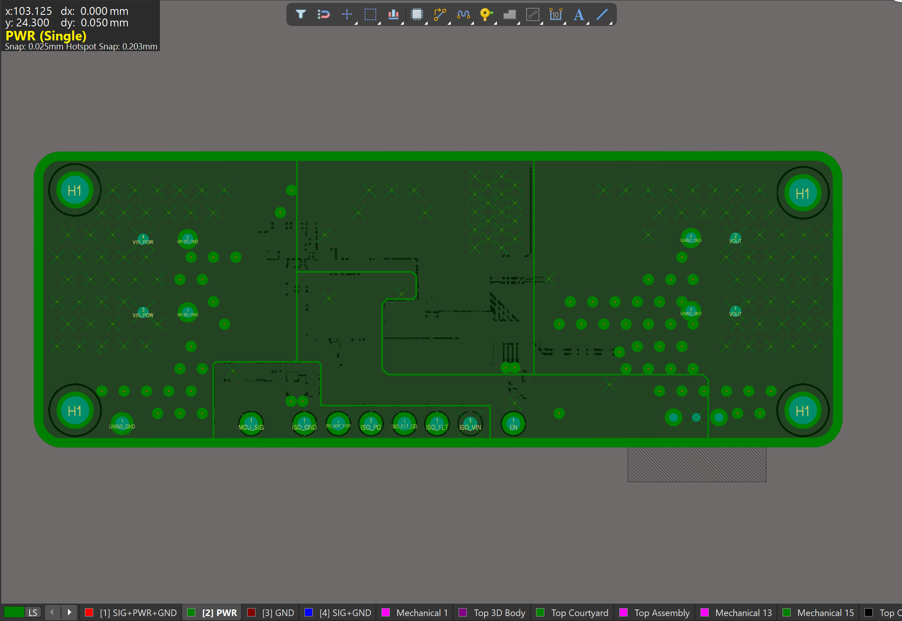

Dedicated Power and Ground Plane in the Relay PCB
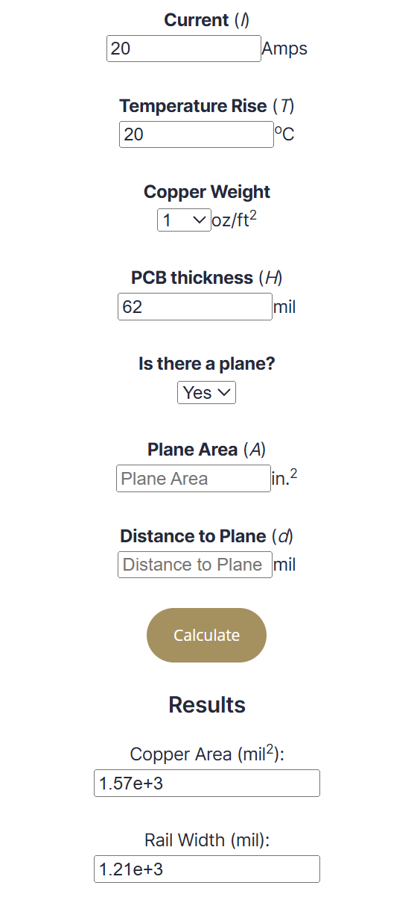
Trace Width and Plane Area Calculation for the Relay PCB using online IPC-2152 Trace Width Calculator

Thermal Vias and Copper Pours in the Relay PCB
Similar to Relay PCB, the power backplane must be designed to handle high current levels, in particular a maximum continuous current of 20A per channel and an overall continuous current input of around 40A (according to the ST Engineering power consumption chart in Appendix I) without overheating or voltage drops. As a result, similar design considerations are also taken for the power backplane, such as using a 4-layer design with dedicated power and ground planes and designing wide and thick traces for power
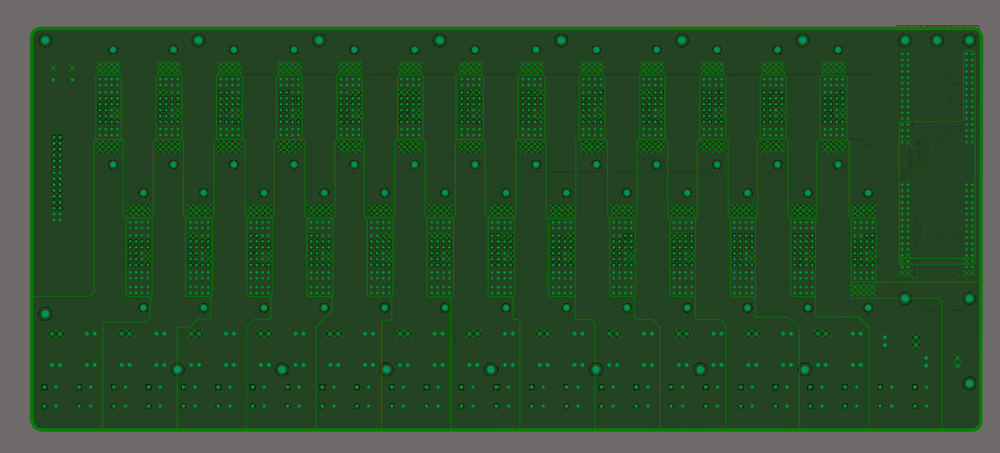
Backplane PCB Dedicated Power Plane
Mechanical Robustness: Among the two connectors, it is introduced in the interim report that the TE Connectivity MULTI-BEAM Connector 6450120-2 was selected as the Relay PCB–to–Power Backplane interface (*refer to the interim report for the detailed selection process). To verify the suitability of this connector for the harsh maritime operating environment, a SolidWorks vibration simulation was conducted prior to the PCB layout stage.
The vibration profile used in the simulation was derived from the onboard IMU data collected during an ST Engineering USV sea trial on 10 March 2026, ensuring that the analysis closely reflects real operational conditions.

Figure 12: Vibration Simulation Results
The simulation results indicate that the selected connector can withstand the expected vibration levels without experiencing excessive mechanical stress or structural failure, confirming its suitability for the backplane design.
Appendix D: Detailed Design of Test & Commissioning PCB

Figure D1: Test & Commissioning PCB Layout
| Section | Design Features | Functionality |
|---|---|---|
| Relay PCB Connector Section | - Contains the same board-to-board connectors as the final Power Backplane design - Designed to accommodate a single Relay PCB channel for testing purposes - Contains a DIP switch for configuration of the Board I2C addresses |
- Allows for the testing of the Relay PCB in an integrated manner with the MCU PCB, simulating real operational conditions - Allows for the testing of different I2C addresses to prepare for multi-channel communicaation in the same I2C bus |
| MCU Peripheral Section | - Contains the same MCU peripherals as the final MCU PCB - Includes additional components such as an LCD screen for real-time monitoring - USB peripheral presented on the board both as power source and data interface with personal computer |
- Enables the development and testing of the MCU firmware, including data collection, processing, and communication functionalities, in a realistic environment that closely mimics the final system setup - Allow functioning of the board even without any specific power module (e.g., battery pack) |
Appendix E: Firmware Development Considerations
Based on the firmware tasks outlined in Section 11, the below design processes has been conducted to ensure the development of robust and efficient firmware for both the Relay PCB and the MCU PCB:
| Firmware Task | Design Considerations |
|---|---|
| Relay PCB Firmware | - Configuring the conversion time of INA228 to ensure accurate and timely response to transient faults. - Setting the sensor sampling rate to balance between accuracy and power consumption in continuous monitoring. - Allocating unique I2C static addresses for each channel to enable proper communication with the MCU. |
| MCU PCB Firmware | - Implementing efficient data collection routines to read PG status, fault status, and power consumption data from the Relay PCB. - Developing robust data processing algorithms to accurately determine fault types based on the collected data. - Ensuring reliable CAN communication protocols for sending processed data to the USV’s power PLC. |
*To be completed after the completion of the PCB manufacturing
Appendix F: Summaries of Other System Test Results
| Tested Functionality | Test Procedures | Results | Pass/Fail |
|---|---|---|---|
| Mechanical Dimension | Measure the dimensions of the fabricated PCB and compare with the design specifications | The final board dimensions is 410 x 173 x 65 mm, smaller than the required 445mm x 180 x 89 mm | PASS |
| Power Distribution | The channel is able to deliver continuous 20A current without overheating or significant voltage drops | The channel successfully delivered 20A continuous current with a voltage drop of less than 0.1V and a steady-state temperature of around 60°C | PASS |
| Fault Detection | Simulate different fault conditions (overcurrent, undervoltage, overvoltage) and observe the response of the system | The system successfully identified the correct type of faults and reported them to the MCU | PASS |
Appendix G: Power Consumption Chart
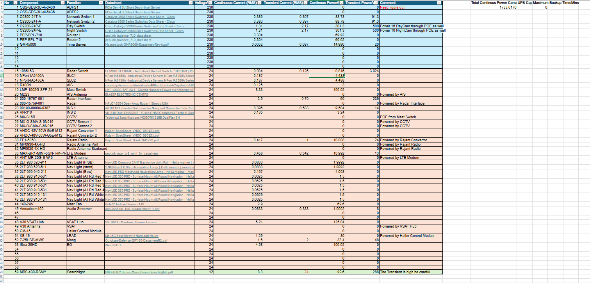
Power Consumption Chart of the USV DC Systems
Appendix H: Schematics & PCB Layouts of the Final Iteration of the PCBs
*To be updated after the completion of the PCB manufacturing